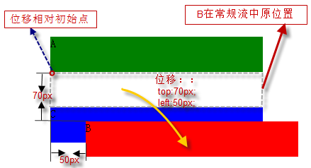

Created by 吴潇
普通流是默认的定位方式
相对定位属于普通流
浮动和绝对定位都脱离了普通流
在浮动模型中，一个框首先根据普通流布局，再将它从流中取出并尽可能地向左或向右偏移,
直到它的外边缘碰到包含框或另一个浮动框的边框为止。
用'float'属性声明浮动，值可以是："none"、"left"、"right"。
弹性盒子布局,子元素的float和clear属性失效
.clearfix:after {
content: " ";
display: table;
clear: both;
}
static | relative | absolute | fixed
static是默认值，表示根据普通流布局
如果一个元素的position值不是 "static"，该元素被称为定位元素。定位的元素生成定位框，其定位基于四个特性：'top'，'right'，'bottom'，'left'。
fixed是固定定位，它定位是相对于浏览器窗口，并且不会随滚动条进行滚动。
框的位置根据普通流计算（被称为普通流中的位置）。然后框相对于它的普通流位置而偏移。其他框的定位计算并不考虑这个偏移。
示意图: 框的位置（可能还有它的尺寸）是由'left'，'right'，'top'和'bottom'属性决定。这些特性指定了框相对于它包含块的偏移量。
问题来了，如何确定包含块？
对于这个问题网络上几乎所有的答案都是这张图：
由此图可以得出结论：绝对定位的包含块是最近的为定位元素的祖先元素(如果存在的话)。
实际开发中常常通过设置"position:relative"，转化为定位元素，来指定包含块。
包裹性即让元素inline-block化。
例如一个div标签默认宽度是100%显示的，但是一旦加上absolute属性，则100%默认宽度就会变成自适应内部元素的宽度。(浮动元素也有此特性)
z-index属性指定了框在当前层叠上下文中的层叠级别与框是否生成局部层叠上下文。
该属性只在定位元素上有作用。
z-index的属性值: 关键字auto和整数，整数可以是负值。
z-index的作用规律比想象中复杂，但其实不需要去彻底弄懂，用的时候多试几个数字达到想要的效果即可。有兴趣完全搞懂原理的同学可以去了解“层叠上下文”这个概念。
简称BFC (Block formatting contexts)
如何触发BFC?
BFC可以看作是隔离的独立容器，容器里面的元素不会在布局上影响到外面的元素。
BFC具有一些特性，这种特性会影响元素的定位以及与其兄弟元素之间的相互作用。
特性一：能包裹浮动元素
特性二：BFC不会重叠浮动元素
这个特性可以用来消灭文字环绕效果
特性三：BFC会阻止边距折叠
如果希望隐藏内容能够被辅助阅读设备识别，就不能使用display:none以及visibility:hidden隐藏元素。可以使用模拟隐藏的隐藏方法，又称可用性隐藏。
.hidden{
position:absolute;
top:-9999em;
}